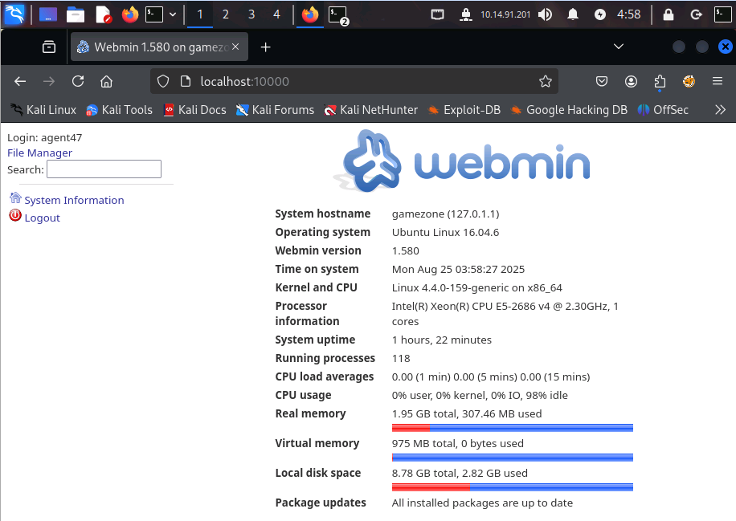

Reverse SSH port forwarding allows you to expose a local service to a remote server. This means a port on the remote host is forwarded to a host and port on your local machine.
There are two types of SSH tunneling:
- -L (Local Forwarding): Redirects traffic from your local machine to a remote destination. Example:
ssh -L 9000:imgur.com:80 user@example.com lets you access Imgur via localhost:9000 even if it's blocked on your network.
- -R (Remote Forwarding): Exposes a local service to a remote server, allowing others to access it through your machine. It’s essentially the reverse of local forwarding.
To identify which services are listening on a host, we use the ss command:
ss -tulpn
This command displays active socket connections with the following flags:
- -t — Show TCP sockets
- -u — Show UDP sockets
- -l — Show only listening sockets
- -p — Show the process using each socket
- -n — Skip resolving service names (shows raw port numbers)
What is the name of the exposed CMS?
The following command creates a secure tunnel from your local machine to the remote server:
ssh -L 10000:localhost:10000 <username>@<ip>
This command sets up a secure SSH tunnel from your local port 10000 to the remote machine’s port 10000. It allows you to access a webserver running on the remote machine as if it were hosted locally. Once connected, open your browser and go to localhost:10000 to interact with the service — without exposing it to the public internet.
After gaining access to the webserver on our local machine, we were able to discover the following information from the page:

The name of the exposed CMS is: Webmin
What is the CMS version?
From that same page, we also discovered the CMS Version, which is: 1.580